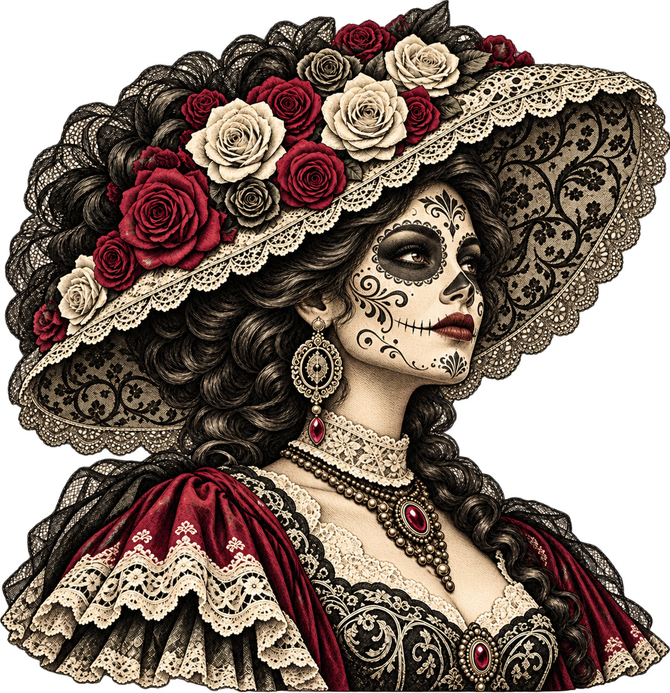
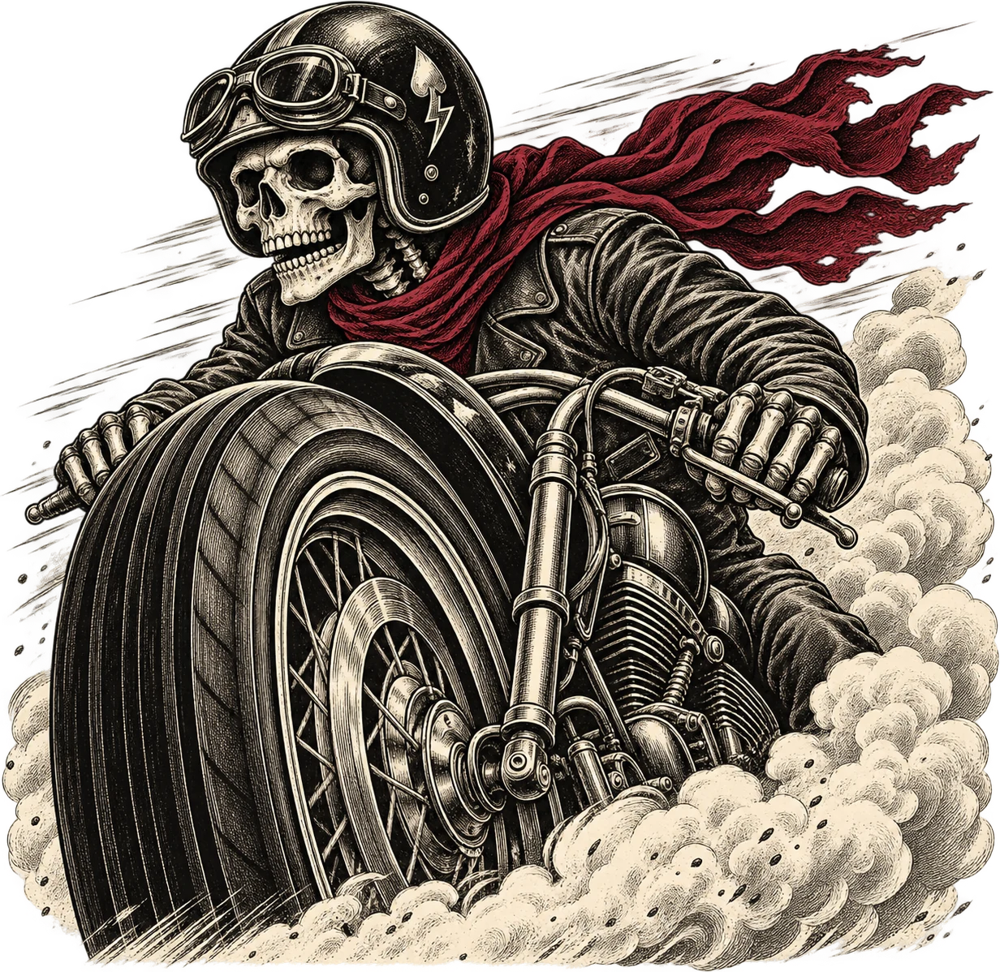
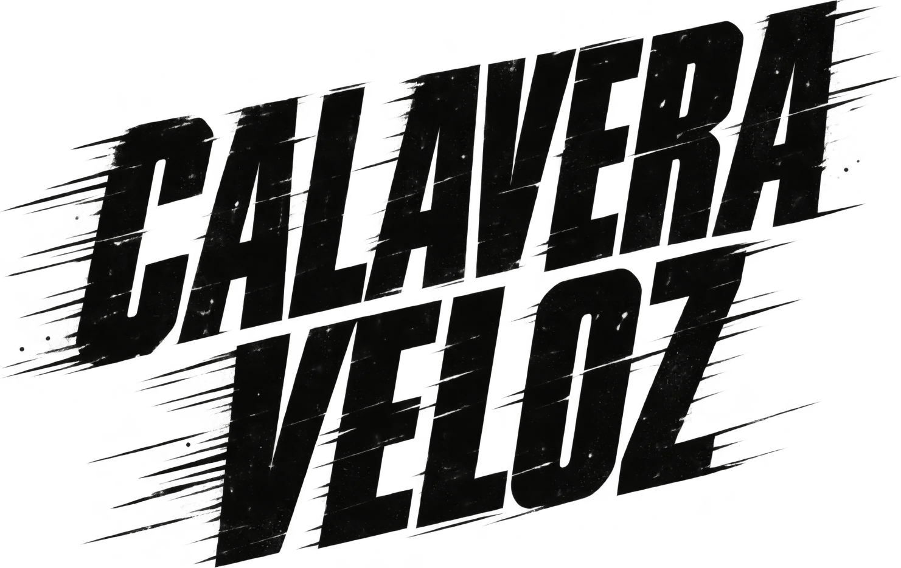
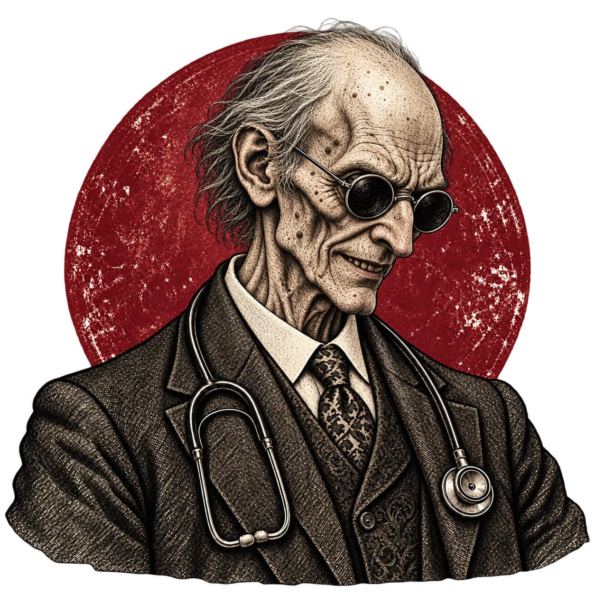
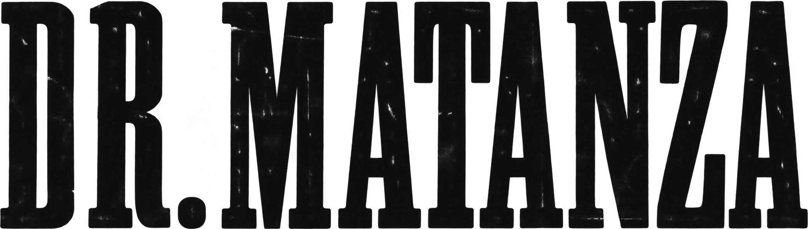
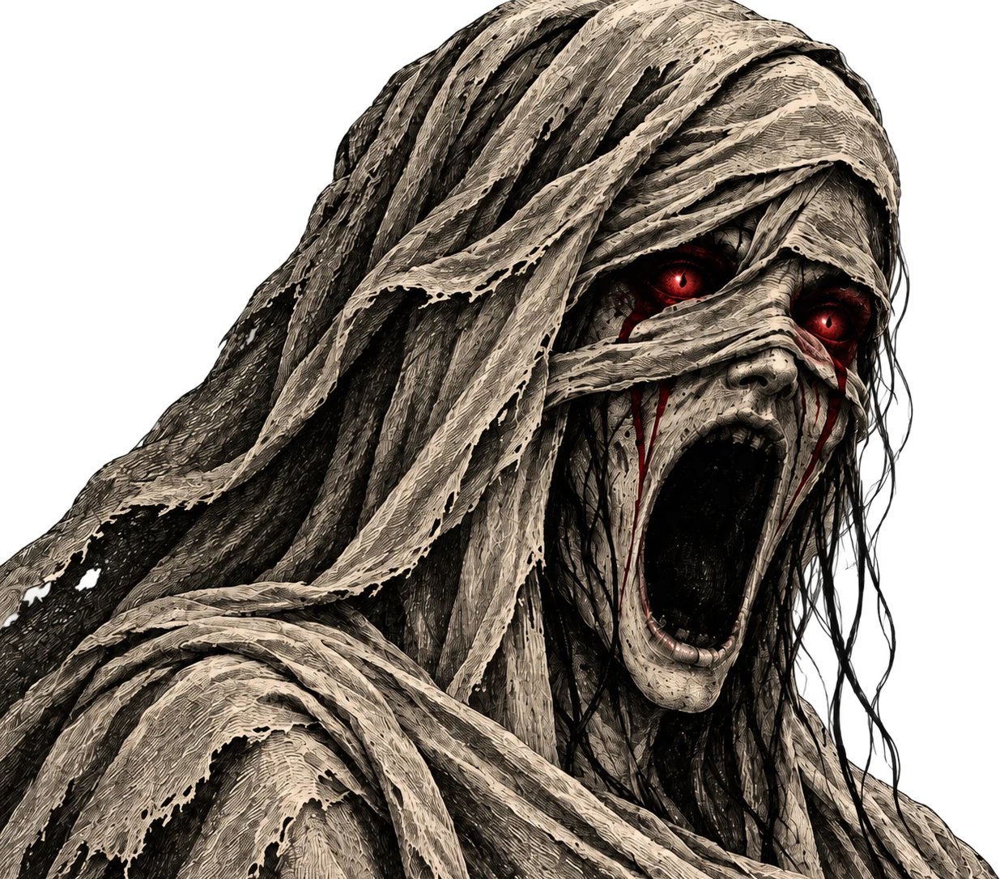

Ropa motera concebida por moteros
El universo canalla

01/Colección

02/Colección


03/Colección


04/Colección
El universo canalla tiene banda sonora.
Elige tu canción. Sin monedas. Sin pedir permiso.